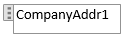
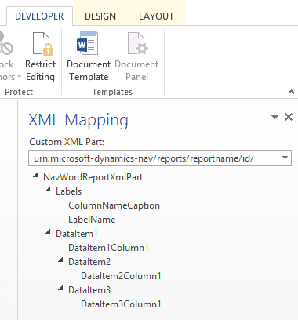

Mit Word-Layouts arbeiten
Ein Word-Berichtslayout bestimmt den Inhalt und das Format eines Berichts, wenn er in Business Central in der Vorschau angezeigt und gedruckt wird. Sie erstellen und ändern diese Layouts mit Microsoft Word.
{kind=link}
Wenn Sie ein Word-Berichtslayout ändern, geben Sie die Felder des Berichtsdatensatzes an, die in den Bericht aufgenommen werden sollen, sowie die Anordnung der Felder. Sie definieren auch das allgemeine Format des Berichts, wie Schriftart und -größe, Ränder und Hintergrundbilder. In der Regel ordnen Sie den Inhalt des Berichts an, indem Sie dem Layout Tabellen hinzufügen.
Um allgemeine Formatierungs- und Layoutänderungen vorzunehmen, wie zum Beispiel Ändern der Schriftart, Hinzufügen und Ändern einer Tabelle oder Entfernen eines Datenfelds, können Sie einfach die grundlegenden Bearbeitungsfunktionen von Word verwenden, wie bei anderen Word-Dokumenten.
Wenn Sie ein Word-Berichtslayout von Grund auf neu entwerfen oder neue Datenfelder hinzufügen, dann beginnen Sie mit dem Hinzufügen einer Tabelle, die Zeilen und Spalten enthält, die später die Datenfelder enthalten werden.
Tipp
Zeigen Sie die Tabellenrasterlinien an, sodass Sie die Grenzen von Tabellenzellen sehen. Denken Sie daran, die Gitternetzlinien auszublenden, wenn Sie mit der Bearbeitung fertig sind. Um Tabellenrasterlinien ein- oder auszublenden, wählen Sie die Tabelle und wählen Sie anschließend unter Layout auf der Registerkarte Tabelle die Option Rasterlinien anzeigen aus.
Schriftarten aus Gründen der Konsistenz in Word-Layouts einbetten
Um sicherzustellen, dass Berichte immer mit den vorgesehenen Schriftarten angezeigt und gedruckt werden, wo immer Benutzer die Berichte öffnen oder drucken, können Sie die Schriftarten in den Word-Beleg einbetten. Das Einbetten von Schriftarten kann jedoch die Größe der Word-Dateien erheblich erhöhen. Weitere Informationen zur Einbettung von Schriftarten in Word finden Sie unter Einbetten von Schriftarten in Word, PowerPoint oder Excel
Hinzufügen von Datenfeldern
Ein Berichtsdataset kann aus Feldern bestehen, die Bezeichnungen, Daten und Bilder anzeigen. In diesem Thema wird das Verfahren zum Hinzufügen von Feldern aus einem Berichtsdatasets in ein bestehendes Word-Berichtslayout für einen Bericht beschrieben. Fügen Sie Felder hinzu, indem Sie benutzerdefinierte XML-Abschnitt in Words für den Bericht verwenden und Inhaltssteuerelemente hinzufügen, die den Feldern des Berichtsdatasets zugeordnet sind. Beim Hinzufügen von Feldern ist es erforderlich, dass Sie einiges Wissen über das Dataset des Berichts haben, damit Sie die Felder identifizieren können, die Sie dem Layout hinzufügen möchten.
Hinweis
Sie können keine integrierten Berichtslayouts in ändern.
Um den benutzerdefinierten XML-Abschnitt für den Bericht in Word zu öffnen
Wenn nicht bereits offen, öffnen Sie den Word-Berichtlayoutbeleg in Word.
Weitere Informationen finden Sie unter Erstellen und bearbeiten eines benutzerdefinierten Berichts- oder Dokumentenlayout.
Zeigen Sie die Registerkarte Entwickler im Menüband von Microsoft Word an.
Standardmäßig wird die Registerkarte Entwickler nicht im Menüband angezeigt. Weitere Informationen finden Sie unter Anzeigen der Entwickler-Registerkarte auf dem Menüband.
Wählen Sie auf der Registerkarte Entwickler die Option XML-Zuordnungs-Bereich aus.
Im Bereich XML-Zuordnung in der Dropdownliste Benutzerdefinierter XML-Abschnitt wählen Sie den benutzerdefinierten XML-Abschnitt für den Bericht Business Central aus, der normalerweise der letzte in der Liste ist. Der Name des benutzerdefinierten XML-Abschnitts hat folgendes Format:
urn:microsoft-dynamics-nav/reports/<report_name>/<ID><report_name>ist der Name, der dem Bericht zugewiesen ist<ID>ist die Kennnummer des Berichts.Nachdem Sie den benutzerdefinierten XML-Abschnitt auswählen, zeigt der XML-Zuordnungsbereich die Beschriftungen und die Feldsteuerelemente an, die für den Bericht verfügbar sind.
Um eine Beschriftung oder ein Datenfeld hinzufügen
Setzen Sie den Cursor in dem Beleg an der Stelle ab, an dem Sie das Steuerelement hinzufügen möchten.
Klicken Sie im XML-Zuordnung-Bereich auf das Steuerelement, das Sie hinzufügen möchten, und klicken Sie dann mit der rechten Maustaste auf Inhaltssteuerelement einfügen und dann auf Reiner Text.
Hinweis
Sie können kein Feld hinzufügen, indem Sie manuell den Datasetfeldnamen in das Inhaltssteuerelement eingeben. Sie müssen den XML-Zuordnung-Bereich verwenden, um die Felder zuzuordnen.
Um wiederholente Zeilen aus Datenfeldern hinzufügen, um eine Liste zu erstellen
Fügen Sie in einer Tabelle eine Tabellenzeile hinzu, die eine Spalte für jedes Feld umfasst, das wiederholt werden soll.
Diese Zeile fungiert als als Platzhalter für wiederkehrenden Felder.
Wählen Sie die gesamte Zeile aus.
Klicken Sie im XML-Zuordnung-Bereich mit der rechten Maustaste auf das Steuerelement, das dem Berichtsdatenelement entspricht, das die Felder enthält, die wiederholt werden sollen, und wählen Sie dann Inhaltssteuerelement einfügen und Wiederholt.
Fügen Sie die wiederkehrenden Felder der Zeile hinzu, wie folgt:
Setzen Sie den Mauszeiger in einer Spalte ab.
Klicken Sie im XML-Zuordnung-Bereich auf das Steuerelement, das Sie hinzufügen möchten, und klicken Sie dann mit der rechten Maustaste auf Inhaltssteuerelement einfügen und dann auf Reiner Text.
Wiederholen Sie die Schritte a und b für jedes Feld.
Hinzufügen von Bildfeldern
Ein Berichtsdataset kann einen Feld enthalten, das ein Bild enthält, beispielsweise ein Firmenlogo oder ein Bild eines Artikels. Um ein Bild aus dem Berichtsdataset hinzuzufügen, fügen Sie ein Bild-Inhaltssteuerelement ein.
Bilder werden im linken oberen Teil des Inhaltssteuerelements ausgerichtet und ändern automatisch Ihre Größe proportional entsprechend den Grenze des Inhaltssteuerelements.
Wichtig
Außerdem können Sie Bilder nur hinzufügen, die in einem Format vorliegen, das von Word unterstützt wird, wie .bmp, .jpeg und PNG-Datei-Typen. Wenn Sie ein Bild hinzufügen, das ein Format hat, das nicht von Word unterstützt wird, erhalten Sie einen Fehler, wenn Sie den Bericht im Client Business Central ausführen.
Um ein Bild hinzuzufügen
Setzen Sie den Zeiger in dem Beleg an der Stelle ab, an dem Sie das Steuerelement hinzufügen möchten.
Klicken Sie im XML-Zuordnung-Bereich auf das Steuerelement, das Sie hinzufügen möchten, und klicken Sie dann mit der rechten Maustaste auf Inhaltssteuerelement einfügen und dann auf Bild.
Um die Bildgröße zu erhöhen oder zu verringern, ziehen Sie einen der Ziehpunkte zur Mitte des Inhaltssteuerelements hin oder von der Mitte weg.
Entfernen der Beschriftungs- und Datenfelder
Beschriftung und Datenfelder eines Berichts sind in Inhaltssteuerelementen in Word enthalten. Die folgende Abbildung zeigt ein Steuerelement für Inhalte, wenn es im Word-Beleg ausgewählt ist.

Der Name der Bezeichnung oder des Datenfeldes wird im Inhaltssteuerelement angezeigt. In dem Beispiel ist der Name "CompanyAddr1".
Um eine Beschriftung oder ein Datenfeld zu entfernen
Klicken Sie mit der rechten Maustaste auf das Feld, das Sie entfernen möchten, und wählen Sie Inhalt des Steuerelements löschen.
Das Inhaltssteuerelement wird entfernt, aber die Feldnamen bleiben als Text erhalten.
Löschen Sie den verbleibenden Text nach Bedarf.
Benutzerdefinierter XML-Teil, Übersicht
Word-Berichtlayouts werden anhand von benutzerdefinierten XML-Abschnitten erstellt. Ein Debitorenspezifischer XML-Abschnitt für einen Bericht besteht aus Elementen, die den Datenelementen, den Spalten und den Beschriftungen entsprechen, die das Dataset des Berichts enthalten, wie im Berichts-DataSet-Designer in definiert. Der benutzerdefinierte XML-Abschnitt wird verwendet, um die Daten in einem Bericht zuzuordnen, wenn der Bericht ausgeführt wird.
XML-Struktur des benutzerdefinierten XML-Abschnitts
Die folgende Tabelle enthält eine vereinfachte Übersicht der XML eines benutzerdefinierten XML-Abschnitts.
| XML-Elemente | Description |
|---|---|
<?xml version="1.0" encoding="utf-16"?> |
Header |
<WordReportXmlPart xmlns="urn:microsoft-dynamics-365/report/<reportname>/<id>/" |
XML-Namespacespezifikation. <reportname> ist der Namee, der dem Bericht zugewiesen ist. <id> ist die ID, die dem Bericht zugewiesen ist. |
..<Labels>....<ColumnNameCaption>ColumnNameCaption</ColumnNameCaption>....<LabelName>LabelCaption</LabelName>..</Labels> |
Enthält alle Beschriftungen für den Bericht. - Beschriftungselemente, die mit Spalten verknüpft sind, weisen das Format <ColumnNameCaption>ColumnNameCaption</ColumnNameCaption> auf.- Beschriftungselemente weisen das Format <LabelName>LabelName</LabelName auf.- Beschriftungen sind in alphabetischer Reihenfolge aufgeführt. |
..<DataItem1>....<DataItem1Column1>DataItem1Column1</DataItem1Column1> |
Dateneinträge und Spalten auf oberster Ebene. Spalten werden in alphabetischer Reihenfolge aufgeführt. |
....<DataItem2>......<DataItem2Column1>DataItem2Column1</DataItem2Column1>....</DataItem2>....<DataItem3>......<DataItem3Column1>DataItem3Column1</DataItem3Column1>....</DataItem3> |
Datenelemente und Spalten, die im Dateneintrag auf oberster Ebene verschachtelt sind. Spalten werden in alphabetischer Reihenfolge unter dem entsprechenden Dateneintrag aufgelistet. |
..</DataItem1></WordReportXmlPart> |
Abschließendes Element. |
Benutzerdefinierter XML-Abschnitt in Word
In Word öffnen Sie den benutzerdefinierten XML-Abschnitt im XML-Zuordnung-Bereich und verwenden anschließend diesen Bereich, um Elemente zu den Inhaltssteuerelementen im Word-Dokument zuzuordnen. Der Bereich XML-Zuordnung ist zugänglich von der Registerkarte Entwickler (weitere Informationen unter Anzeigen der Entwickler-Registerkarte auf dem Menüband).
Die Elemente im XML-Zuordnung-Bereich erscheinen in einer Struktur ähnlich dem XML-Quellcode. Beschriftungsfelder werden unter einem allgemeinen element Beschriftungen gruppiert, und Dateneintrag und Spalten sind in einer hierarchischen Struktur angeordnet, die der XML-Quelle entspricht, wobei die Spalten in alphabetischer Reihenfolge aufgeführt werden. Elemente werden durch ihren Spaltennamen identifiziert, wie im DataSet des Berichts im AL-Code definiert. Weitere Informationen finden Sie unter Definieren eines Berichts-Datasets.
In der folgenden Abbildung wird der einfache benutzerdefinierte XML-Abschnitt aus dem vorherigen Abschnitt im XML-Zuordnung-Bereich eines Word-Dokuments dargestellt.

Um dem Layout eine Beschriftung oder ein Feld hinzuzufügen, fügen Sie ein Inhaltssteuerelement ein, das dem Element im XML-Zuordnung-Bereich zugeordnet ist.
Um wiederholen Zeilen aus Spalten zu erstellen, fügen Sie ein Wiederholen-Inhaltssteuerelement für das übergeordnete Datenelement ein, und fügen Sie dann ein Inhaltssteuerelement für die Spalten hinzu.
Bei Beschriftungen ist der tatsächliche Text, der im generierten Angabe erscheint, der Wert der Caption-Eigenschaft für das Feld in der Datenelementtabelle (wenn die Beschriftung mit der Spalte im Berichtsdataset verknüpft ist), oder entspricht einer Beschriftung im Berichts-Bezeichnungs-Designer (wenn die Beschriftung nicht mit einer Spalte im Dataset verknüpft ist).
Die Sprache der Beschriftung, die angezeigt wird, wenn Sie den Bericht ausführen, hängt von der Spracheneinstellung des Berichtsobjekts ab.
Weitere Informationen
Erstellen und bearbeiten Sie einen benutzerdefinierten Bericht
Kostenlose E-Learning-Module für Business Central finden Sie hier